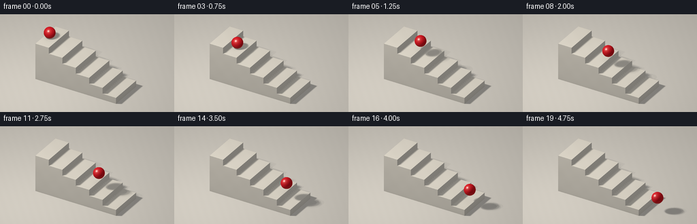
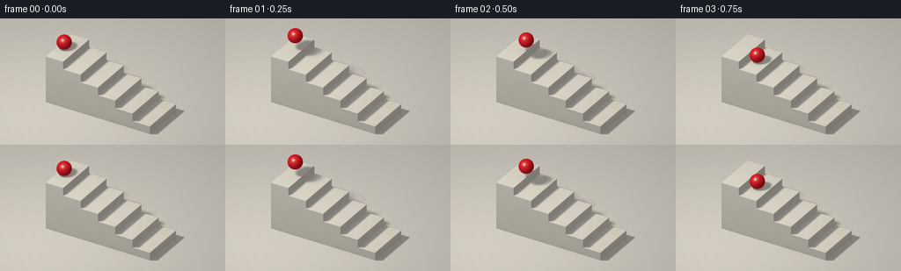

CODING AGENTS AS PIXEL WORLD MODELS
traex/GPT-6.1-Sol · instance_preservation_0021
点击播放 · 原生 RGB 像素
逐轮保存的候选
回放视频、检查图与代码变化。
每份候选均可单独播放。实际图片检查记录在下方工具轨迹中。
候选 01播放与检查图
点击播放 · 原生 RGB 像素


展开代码变化
--- 上一保存版本
+++ 本次保存版本
@@ -0,0 +1,202 @@
+"""Deterministic, numpy-only geometric rendering of a bouncing red ball."""
+from pathlib import Path
+import json
+import numpy as np
+from PIL import Image
+import artifact_io
+
+ROOT = Path(__file__).resolve().parent
+SPEC = json.loads((ROOT / 'task_spec.json').read_text())
+PROMPT = (ROOT / 'prompt.txt').read_text().strip()
+W, H, SS = SPEC['width'], SPEC['height'], 3
+RW, RH = W * SS, H * SS
+
+
+def norm(v):
+ return v / np.maximum(np.linalg.norm(v, axis=-1, keepdims=True), 1e-9)
+
+
+FORWARD = norm(np.array([6., -10., 7.]))
+RIGHT = norm(np.cross([0., 0., 1.], FORWARD))
+UP = np.cross(FORWARD, RIGHT)
+TARGET = np.array([.10, 0., 1.50])
+yy, xx = np.mgrid[:RH, :RW]
+sx = ((xx + .5) / SS - W / 2) / 23.
+sy = (H / 2 - (yy + .5) / SS) / 23.
+ORIGINS = (TARGET + sx[..., None] * RIGHT + sy[..., None] * UP
+ + 22. * FORWARD).reshape(-1, 3)
+DIRECTION = -FORWARD
+COUNT = len(ORIGINS)
+BOXES = []
+for step in range(6):
+ BOXES.append((np.array([-3. + step, -1.25, 0.]),
+ np.array([-2. + step, 1.25, (6-step)*.44])))
+
+LIGHT = np.array([-3.5, -4.5, 9.])
+# A broad studio softbox, sampled deterministically.
+LIGHTS = [LIGHT + np.array([dx, dy, 0.]) for dx, dy in
+ [(0, 0), (-.75, -.55), (.75, -.55), (-.75, .55), (.75, .55),
+ (-.35, 0), (.35, 0), (0, -.35), (0, .35)]]
+
+
+def hit_box(origins, directions, lo, hi):
+ inv = 1. / np.where(np.abs(directions) > 1e-10, directions, 1e-10)
+ ta = (lo-origins)*inv
+ tb = (hi-origins)*inv
+ near = np.maximum.reduce(np.minimum(ta, tb), axis=-1)
+ far = np.minimum.reduce(np.maximum(ta, tb), axis=-1)
+ return np.where((far >= near) & (far > 1e-5) & (near > 1e-5), near, np.inf)
+
+
+def sphere_hit(origins, direction, center, radius):
+ oc = origins-center
+ b = np.sum(oc*direction, axis=-1)
+ c = np.sum(oc*oc, axis=-1)-radius*radius
+ disc = b*b-c
+ t = -b-np.sqrt(np.maximum(disc, 0.))
+ return np.where((disc >= 0.) & (t > 1e-5), t, np.inf)
+
+
+def background():
+ distance = -ORIGINS[:, 2]/DIRECTION[2]
+ object_id = np.full(COUNT, -1, np.int16)
+ for i, (lo, hi) in enumerate(BOXES):
+ t = hit_box(ORIGINS, DIRECTION, lo, hi)
+ visible = t < distance
+ distance[visible] = t[visible]
+ object_id[visible] = i
+ points = ORIGINS+distance[:, None]*DIRECTION
+ normals = np.zeros_like(points)
+ normals[:, 2] = 1.
+ albedo = np.tile(np.array([.61, .585, .54]), (COUNT, 1))
+ floor = object_id == -1
+ # A continuous, warm neutral studio floor. No horizon or distracting props.
+ mottling = (.003*np.sin(points[:, 0]*9.1+points[:, 1]*7.8)
+ + .002*np.sin(points[:, 0]*33.8-points[:, 1]*23.6))
+ albedo += mottling[:, None]
+ for i, (lo, hi) in enumerate(BOXES):
+ mask = object_id == i
+ p = points[mask]
+ gaps = np.minimum(np.abs(p-lo), np.abs(p-hi))
+ axis = np.argmin(gaps, axis=1)
+ n = np.zeros_like(p)
+ n[np.arange(len(p)), axis] = np.where(
+ np.abs(p[np.arange(len(p)), axis]-hi[axis]) <
+ np.abs(p[np.arange(len(p)), axis]-lo[axis]), 1., -1.)
+ # Tiny rounded bevels at the exposed horizontal tread edges.
+ bevel = .028
+ top = np.abs(p[:, 2]-hi[2]) < 1e-4
+ for ax in (0, 1):
+ for side, coord in [(-1, lo[ax]), (1, hi[ax])]:
+ edge = top & (np.abs(p[:, ax]-coord) < bevel)
+ weight = .30*(1-np.abs(p[edge, ax]-coord)/bevel)
+ n[edge, ax] += side*weight
+ normals[mask] = norm(n)
+ # Cream limestone with restrained mineral variation and fine pores.
+ grain = (np.sin(p[:, 0]*86.7+p[:, 1]*63.1+p[:, 2]*23.4)
+ *np.sin(p[:, 1]*104.2-p[:, 2]*76.7+p[:, 0]*31.9))
+ soft = np.sin(p[:, 0]*5.1+p[:, 1]*2.2)*np.sin(p[:, 2]*4.4-p[:, 1]*3.8)
+ albedo[mask] = np.array([.70, .665, .595]) + (.0045*grain+.007*soft)[:, None]
+ ambient = .36*np.clip(.83+.17*normals[:, 2], 0, 1)
+ # Contact occlusion along tread/riser junctions and the block's base.
+ ao = np.ones(COUNT)
+ for i, (lo, hi) in enumerate(BOXES):
+ mask = object_id == i
+ p = points[mask]
+ is_top = normals[mask, 2] > .9
+ if i > 0:
+ ao[mask] *= 1-.19*np.exp(-np.maximum(p[:, 0]-lo[0], 0)/.065)*is_top
+ is_side = normals[mask, 2] < .5
+ ao[mask] *= 1-.12*np.exp(-p[:, 2]/.11)*is_side
+ diffuse = np.zeros(COUNT)
+ start = points + normals*.002
+ for light in LIGHTS:
+ vec = light-start
+ length = np.linalg.norm(vec, axis=1)
+ direction = vec/length[:, None]
+ blocked = np.zeros(COUNT, bool)
+ for lo, hi in BOXES:
+ t = hit_box(start, direction, lo, hi)
+ blocked |= t < length
+ diffuse += np.maximum(np.sum(normals*direction, axis=1), 0)*(~blocked)/len(LIGHTS)
+ ambient_rgb = albedo*(ambient*ao)[:, None]
+ direct_rgb = albedo*(.72*diffuse)[:, None]*np.array([1.03, 1.0, .94])
+ return points, normals, distance, ambient_rgb, direct_rgb
+
+
+POINTS, NORMALS, BACK_DISTANCE, AMBIENT, DIRECT = background()
+
+
+def ball_position(time):
+ period = .75
+ hop = min(int(time/period), 6)
+ local = time-hop*period
+ g = 10.
+ step_drop = .44 if hop < 6 else 0.
+ takeoff_speed = (.5*g*period*period-step_drop)/period
+ radius = .38
+ height = max((6-hop)*.44, 0.)
+ center = np.array([-2.6+time/period, -.15,
+ height+radius+takeoff_speed*local-.5*g*local*local])
+ return center, radius
+
+
+def render(time):
+ center, radius = ball_position(time)
+ # The moving sphere casts a soft shadow onto whichever tread lies below it.
+ unblocked = np.zeros(COUNT)
+ for light in LIGHTS:
+ d = norm(light-(POINTS+NORMALS*.002))
+ shadow_distance = sphere_hit(POINTS+NORMALS*.002, d, center, radius)
+ unblocked += (~np.isfinite(shadow_distance))/len(LIGHTS)
+ rgb = AMBIENT + DIRECT*unblocked[:, None]
+ # A tighter ambient contact shadow fades naturally during each bounce.
+ hstep = np.maximum(center[2]-radius-POINTS[:, 2], 0.)
+ dx = POINTS[:, 0]-center[0]
+ dy = POINTS[:, 1]-center[1]
+ contact = .22*np.exp(-(dx*dx+dy*dy)/(.085+.15*hstep)) * np.exp(-hstep/.26)
+ contact *= NORMALS[:, 2] > .8
+ rgb *= (1-contact)[:, None]
+ t = sphere_hit(ORIGINS, DIRECTION, center, radius)
+ visible = t < BACK_DISTANCE
+ p = ORIGINS[visible]+t[visible, None]*DIRECTION
+ n = norm(p-center)
+ l = norm(LIGHT-p)
+ v = np.broadcast_to(FORWARD, n.shape)
+ ndotl = np.clip(np.sum(n*l, axis=1), 0, 1)
+ nv = np.clip(np.sum(n*v, axis=1), 0, 1)
+ half = norm(l+v)
+ nh = np.clip(np.sum(n*half, axis=1), 0, 1)
+ # Rich, saturated red rubber with a broad polished highlight, not metallic.
+ base = np.array([.68, .010, .018])
+ tiny = .003*np.sin(p[:, 0]*225+p[:, 1]*109)*np.sin(p[:, 2]*183-p[:, 0]*54)
+ diffuse = .25+.78*ndotl + .055*np.maximum(n[:, 2], 0)
+ sphere_rgb = (base+tiny[:, None])*diffuse[:, None]
+ broad = .075*nh**14
+ specular = .80*nh**95
+ sphere_rgb += (broad+specular)[:, None]*np.array([1., .94, .84])
+ # Soft warm floor bounce and a restrained rim reflection.
+ sphere_rgb += np.maximum(-n[:, 2], 0)[:, None]*np.array([.038, .008, .007])
+ rim = (1-nv)**5*.045
+ sphere_rgb += rim[:, None]*np.array([.64, .41, .32])
+ rgb[visible] = sphere_rgb
+ # Linear-light rendering and gentle vignette, followed by sRGB conversion.
+ rgb = np.maximum(rgb, 0)
+ image = rgb.reshape(RH, RW, 3)
+ vignette = 1-.075*((sx*23/(W*.73))**2+(sy*23/(H*.8))**2)
+ image *= vignette[..., None]
+ image = np.clip(image, 0, 1)
+ image = np.where(image <= .0031308, 12.92*image, 1.055*image**(1/2.4)-.055)
+ image = Image.fromarray(np.uint8(np.clip(image*255+.5, 0, 255)))
+ return np.asarray(image.resize((W, H), Image.Resampling.LANCZOS))
+
+
+if __name__ == '__main__':
+ frames = []
+ for i in range(SPEC['frames']):
+ frames.append(render(i/SPEC['fps']))
+ center, _ = ball_position(i/SPEC['fps'])
+ print(f'frame {i:02d}: ball at {center.round(3)}', flush=True)
+ frames = np.stack(frames)
+ artifact_io.save(frames, ROOT)
+ print(f'Saved {frames.shape} RGB frames for: {PROMPT}')
可观测工具轨迹
实际执行的命令与返回图片。
命令 1exit 0
/bin/bash -lc 'ls -la && cat prompt.txt && cat GENERATION_RULES.md && cat task_spec.json'
命令 2exit 0
/bin/bash -lc "cat artifact_io.py && python - <<'PY'
import PIL, numpy
print('PIL',PIL.__version__)
PY"命令 3exit 0
/bin/bash -lc "python - <<'PY' import numpy as np cam=np.array([7.,-11.,8.]); w=cam/np.linalg.norm(cam); r=np.cross([0,0,1],w); r/=np.linalg.norm(r); u=np.cross(w,r); target=np.array([.1,0,1.5]); for p in [[-3,-1.25,3],[-3,1.25,3],[3,-1.25,0],[3,1.25,0],[-2.6,0,3.95],[3.9,0,.85]]: a=np.array(p)-target print(p,128+a@r*256/9.9,72-a@u*256/9.9) print(w,r,u) PY"
命令 4exit 0
/bin/bash -lc "python - <<'PY' import numpy as np cam=np.array([6.,-10.,7.]); w=cam/np.linalg.norm(cam); r=np.cross([0,0,1],w); r/=np.linalg.norm(r); u=np.cross(w,r); tar=np.array([.2,0,1.5]); for p in [[-3,-1.25,2.64],[-3,1.25,2.64],[3,-1.25,0],[3,1.25,0],[-2.2,-.2,3.65],[3.7,-.2,.6]]: a=np.array(p)-tar print(p,128+a@r*23,72-a@u*23) PY"
命令 5exit 0
/bin/bash -lc "python - <<'PY' import numpy as np w=np.array([6,-10,7.]);w/=np.linalg.norm(w);r=np.cross([0,0,1],w);r/=np.linalg.norm(r);u=np.cross(w,r) for p in [[-2.52,-.15,3.06],[-2.1,-.15,3.54],[3.48,-.15,.42],[3.2,-.15,.84]]: a=np.array(p)-[.1,0,1.5];print(128+a@r*23,72-a@u*23) PY"
命令 6exit 0
/bin/bash -lc 'OPENBLAS_NUM_THREADS=1 python generate.py'
命令 7exit 1
/bin/bash -lc "python - <<'PY'
from pathlib import Path
import numpy as np
from PIL import Image
p=Path('.')
a=np.load('pixels.npz')['pixels']
assert a.shape==(144,256,20)
for i in range(20):
im=np.array(Image.open(f'frames/{i:02d}.png'))
red=(im[:,:,0]>im[:,:,1]*1.6)&(im[:,:,0]>120)&(im[:,:,1]<160)
y,x=np.where(red)
print(f'{i:02d} red ball: {len(x)} pixels, bbox=({x.min()},{y.min()})â({x.max()},{y.max()})')
assert len(x)>140
assert x.min()>0 and x.max()<255 and y.min()>0 and y.max()<143
assert all((p/f).is_file() for f in ['generate.py','pixels.npz','inspection.png','transition_check.png','index.html'])
print('Artifact checks passed')
PY
command -v ffmpeg"保存候选 1 份；完成命令 7 次；可验证图片返回 0 张。原始 API 响应与完整日志保留在本地。